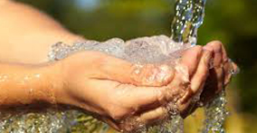
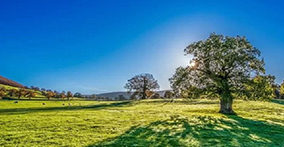

Komponen Lingkungan Hidup

Air
merupakan unsur lingkungan hidup yang paling penting bagi kehidupan. Air di permukaan bumi tersebar dalam bentuk air laut, air permukaan, air tanah, awan dan salju.

Udara
merupakan unsur lingkungan hidup yang paling penting bagi kehidupan. Air di permukaan bumi tersebar dalam bentuk air laut, air permukaan, air tanah, awan dan salju.

Tanah
merupakan unsur lingkungan hidup yang paling penting bagi kehidupan. Air di permukaan bumi tersebar dalam bentuk air laut, air permukaan, air tanah, awan dan salju.